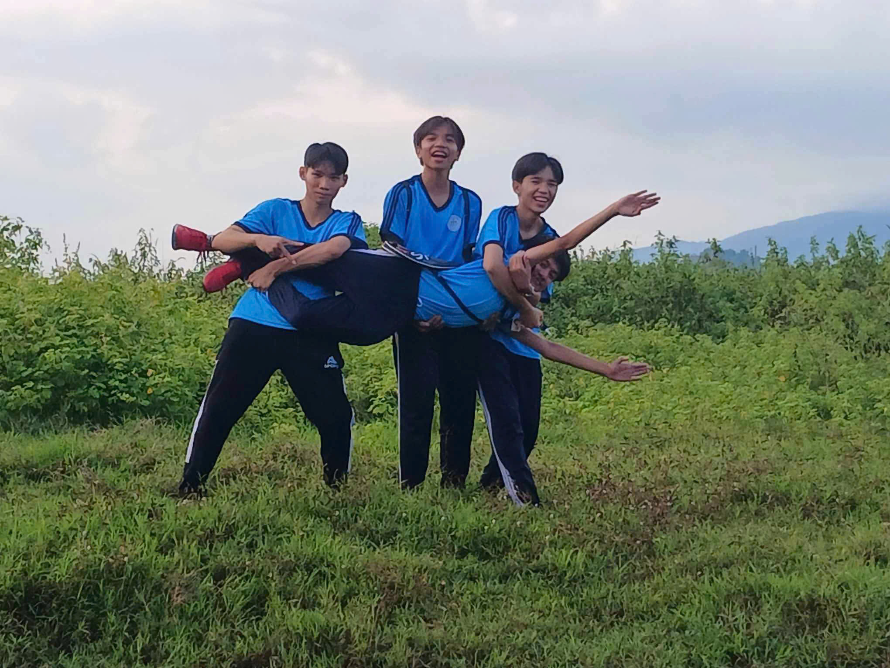
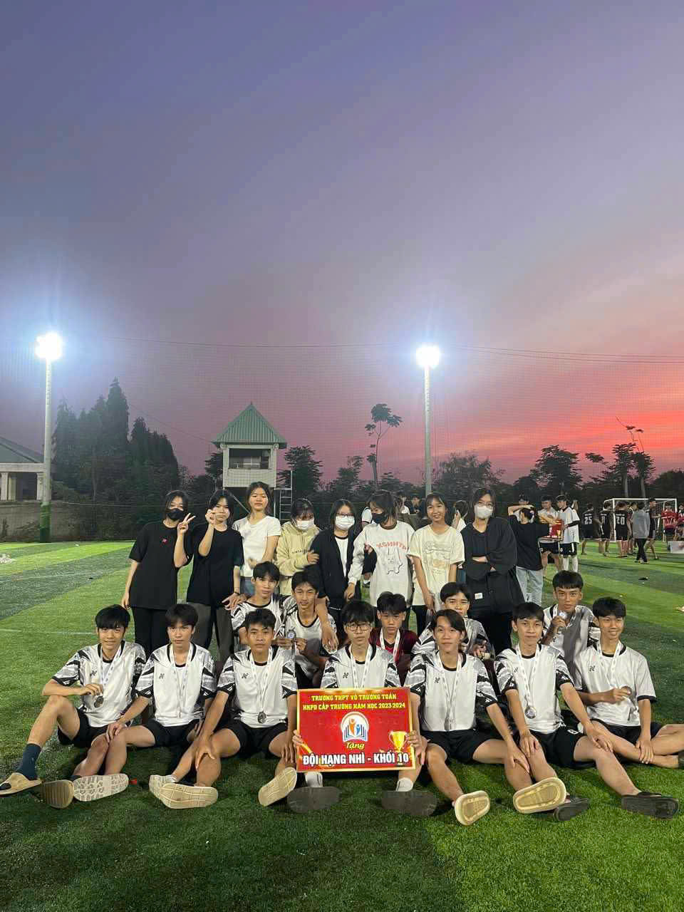
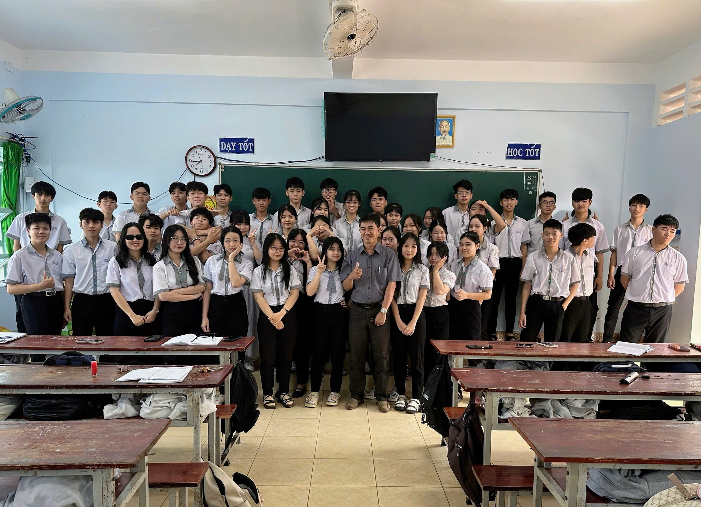
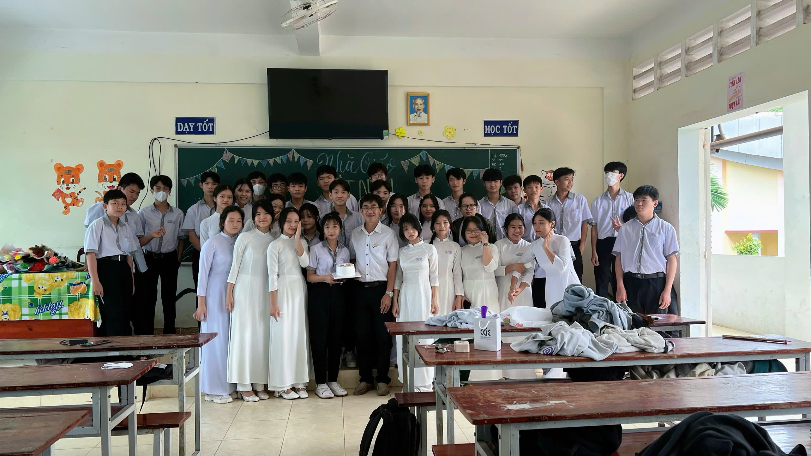
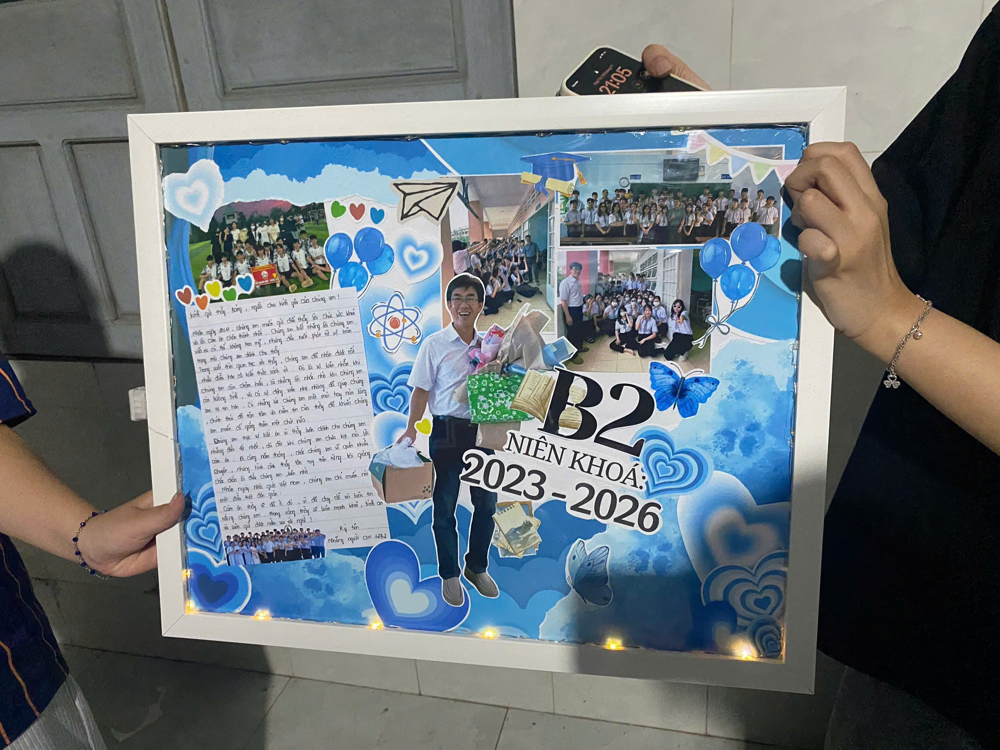
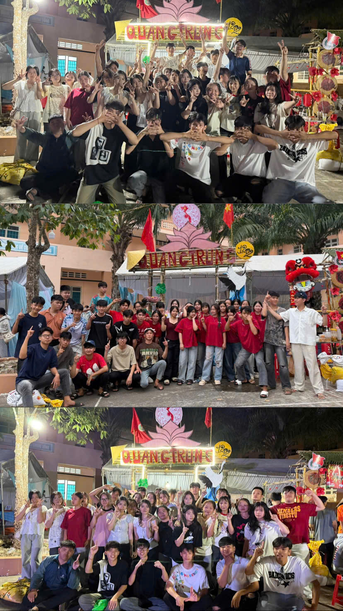

Lớp B2 đã có một hành trình đầy ấn tượng khi vượt qua 9 lớp còn lại để hiên ngang bước vào trận chung kết, nơi mà chúng ta phải đối đầu với đối thủ mạnh nhất – B3. Trận đấu diễn ra căng thẳng và kịch tính, khi B2 tận dụng tốt cơ hội và có những khoảnh khắc tỏa sáng rực rỡ để vươn lên dẫn trước cách biệt một bàn . Tưởng chừng chiến thắng đã nằm trong tầm tay, nhưng chỉ trong những giây cuối cùng, một chút mất tập trung đã khiến chúng ta phải trả giá bằng bàn gỡ hòa đầy tiếc nuối. Đánh mất lợi thế, B2 bước vào loạt sút luân lưu cân não. Dù đã thi đấu với tất cả nỗ lực và quyết tâm, chúng ta vẫn phải chấp nhận thất bại sát nút trước B3. Dẫu còn nhiều tiếc nuối, nhưng với tinh thần chiến đấu hết mình, B2 hoàn toàn có thể tự hào vì những gì họ đã làm được và ra về với niềm vui của sự cống hiến trọn vẹn.

Nhân dịp 20/11 – ngày tri ân các thầy cô giáo, tập thể lớp 12B2 xin gửi đến thầy Nguyễn Đức Bảng lời chúc tốt đẹp và chân thành nhất. Chúng em biết ơn thầy không chỉ vì những bài giảng Vật lý dễ hiểu, sinh động mà còn vì sự tận tâm, quan tâm và luôn đồng hành cùng chúng em trong suốt chặng đường học tập. Thầy không chỉ là người truyền đạt kiến thức mà còn là người truyền cảm hứng, giúp chúng em trưởng thành hơn từng ngày. Tập thể 12B2 hứa sẽ luôn cố gắng học tập thật tốt, sống đẹp và đoàn kết để không phụ lòng thầy. Chúc thầy luôn mạnh khỏe, hạnh phúc và tiếp tục dìu dắt nhiều thế hệ học sinh trên con đường tri thức.



Hội trại Xuân – nơi chúng em cùng nhau thể hiện tinh thần sáng tạo, đoàn kết và tạo nên những kỷ niệm đáng nhớ. Với mục tiêu “học tốt – sống đẹp”, lớp 12B2 sẽ luôn cố gắng hết mình để không phụ sự kỳ vọng của thầy cô và viết tiếp những trang thanh xuân thật rực rỡ.
